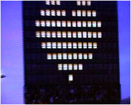

| design |
| home page |
|
| . i was at transmediale, and me and my LAN-friends actually got half the software award (the other half went to Alex MacLean) as well as two public awards (given by the visitors of transmediale) as well as an honorary mention in the interaction category for tracenoizer. matthew fuller for instance talked about how software designers design interfaces and how these then shape users. margarethe on the other hand talked more about the generative qualities of software. sometimes she was even giving the impression that she herself was a speech-generating-machine. |
|  |
| . i was at transmediale, and me and my LAN-friends actually got half the software award (the other half went to Alex MacLean) as well as two public awards (given by the visitors of transmediale) as well as an honorary mention in the interaction category for tracenoizer. matthew fuller for instance talked about how software designers design interfaces and how these then shape users. margarethe on the other hand talked more about the generative qualities of software. sometimes she was even giving the impression that she herself was a speech-generating-machine. |